Version: 0.2 (2021.01.14 released)
English
制約事項
- 対応言語: 英語
- 対応形式: Final Draft (fdx)、テキストファイル、スペックスクリプトスタイルのテキスト
- 対応スクリプト領域: headers and stage direction
- ト書きから抽出されたプロップがセリフ上にある場合は、ハイライト表示されます。
- デフォルト辞書でサポートされているカテゴリ: AIRCRAFT, ANIMALS, VEHICLES, GUNS, PROPS, SONGS, EEFECTS, WARDROBE
- 一度に分析する推奨最大数: 10 シーン（一般的なケース、各スクリプトの文章量に依存）
特徴
- マルチシーン処理の取り扱い
- ユーザ辞書のパーソナライズ
使い方
Analyze your script
- スクリプトをインポートする
[マルチシーン処理]
- [解析] ボタンをクリックすると、ヘッダ検出後にシーンが自動的に分離されます。
(A) (A) [ファイルを開く] ボタンをクリックすると、アップロードするファイルを選択できます
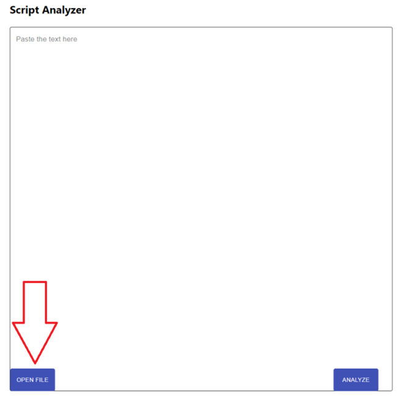
(B)スペックスクリプトスタイルのテキストをコピーしてフォームに貼り付ける
[注意] 最初の行にヘッダーを含めてください
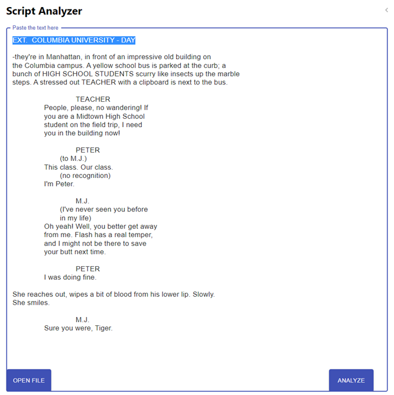
- [解析] ボタンをクリックします
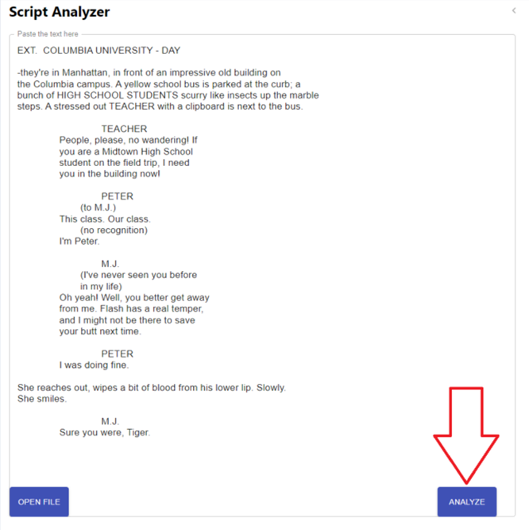
- 解析結果
[マルチシーン処理]
- シーンとその結果を切り替える：上部の番号ボタンまたは方向矢印をクリックします。

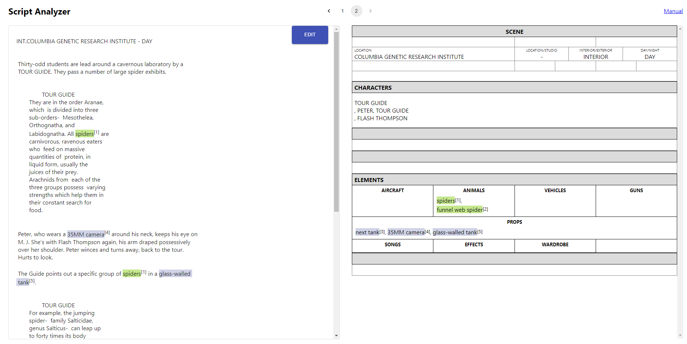
スクリプトを編集する
- 現状、 [解析] ボタンをクリックした後でのみ表示されます。
- また、シーン分割後ではなく入力した全てのスクリプトが表示されます。
- 編集ボタンをクリックすると、スクリプトを編集できます
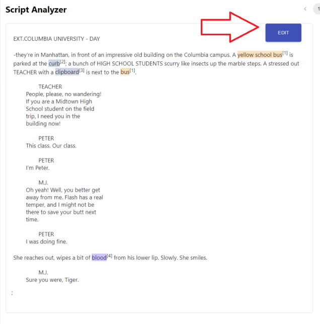
- [解析] ボタンをクリックします
辞書のカスタマイズ
- URL末尾の米印部分「/id /****」を編集して、ユーザ辞書名を設定します
** [注意] 名前を設定しないと (https://dny5q9airvsek.cloudfront.net/)、スクリプトは解析できますが、カスタム辞書に関連する機能は使用できません。***
- デフォルト： test_user
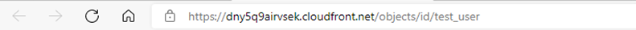
- ユーザー辞書に追加またはユーザー辞書から削除する方法を選択します。
- (A) スクリプト上の単語をハイライト (再解析前の結果に変更なし)
- (B) スクリプトからブレークダウン・シートへ単語のドラッグ・アンド・ドロップ (結果と辞書への追加)
- (C) ブレークダウンシートの単語をクリック (結果と辞書から削除)
(A) スクリプト上の単語をハイライト (結果は変更されず、再度解析後に反映されます)
- 脚本の解析後に、 ユーザ辞書に追加/削除する単語をカーソルでハイライト表示する
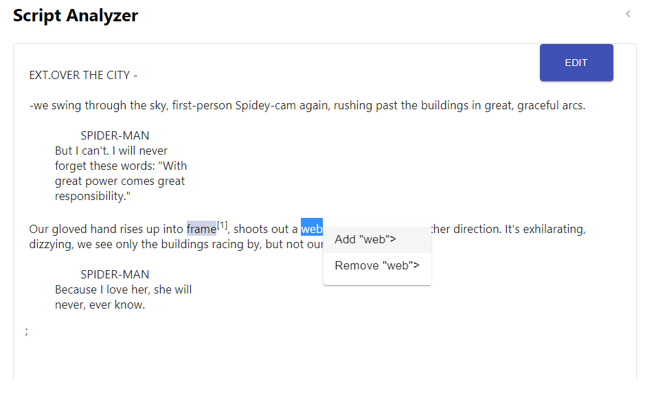
- 処理 (追加/削除) とカテゴリ（１つ）を選択する
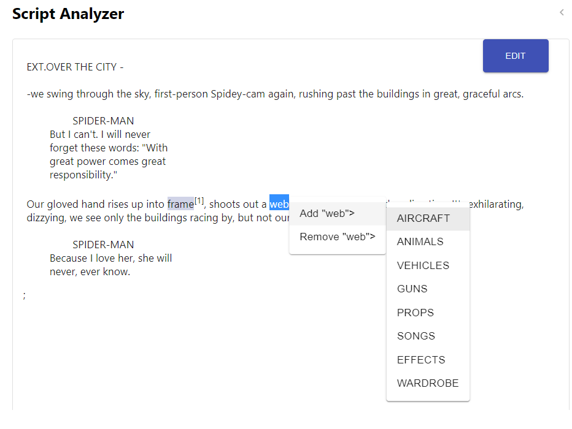
(B) スクリプトからブレークダウン・シートへ単語のドラッグ・アンド・ドロップ (結果と辞書に追加)
- 単語をハイライト表示してスクリプトからドラッグする
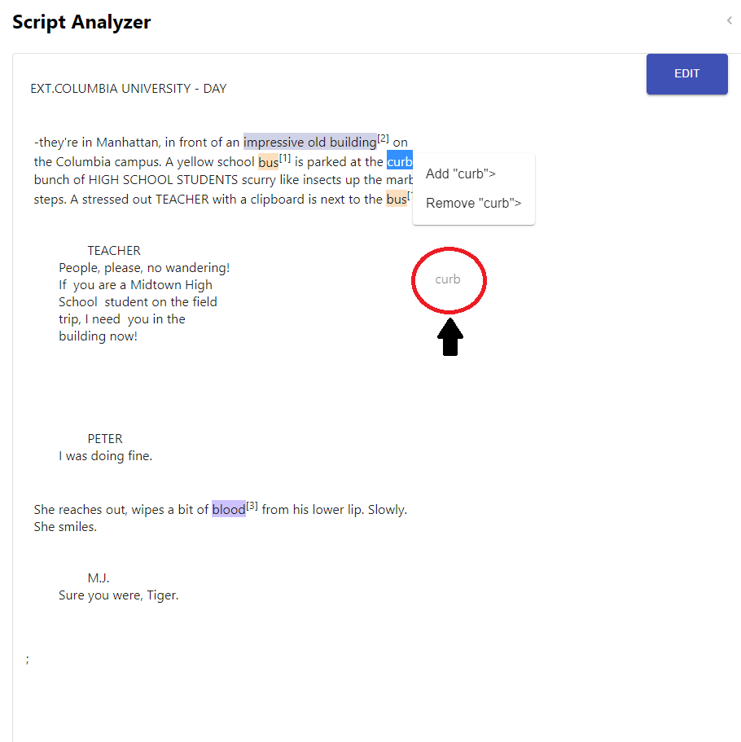
- ブレークダウンシートにドロップする
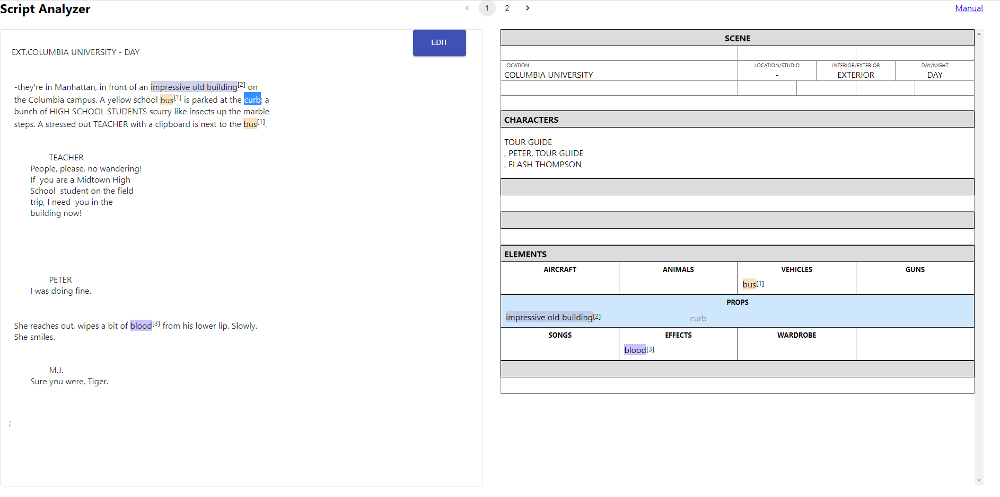
(C) ブレークダウンシートの単語をクリック (結果と辞書から削除)
-
削除する単語にカーソルを合わせてクリックし、削除ボタンを選択
する
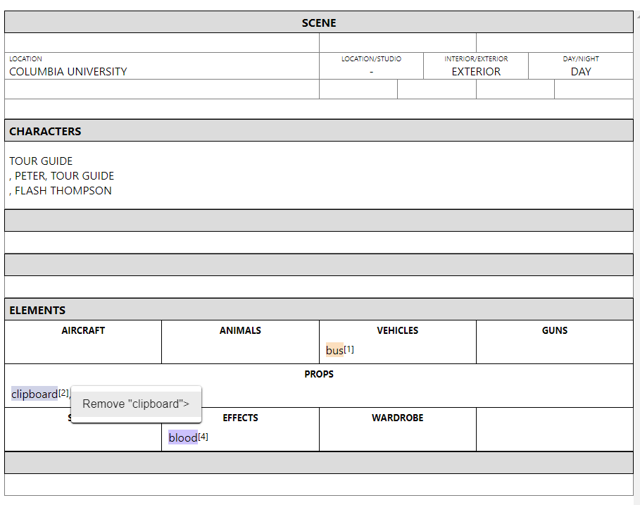
-
単語は、解析されたスクリプト、結果、および辞書から削除される
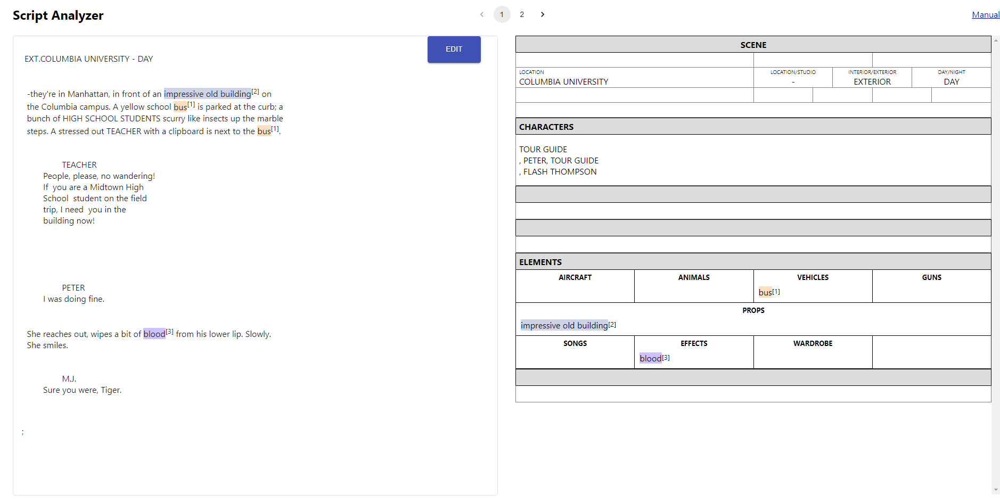